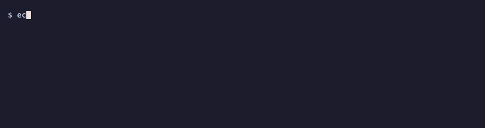

Quickstart¶
Go from an empty folder to a reused, verified test result in five minutes. You will see the four things Aval does: a miss, a reuse, a changed input and a rejected attestation.
You need aval (Install, one line), Docker and openssl.
Copy each block into one shell, in order. The text block under it is what
you should see. ... stands for a digest that is different on every run.
1. Start a registry¶
Aval keeps results in an OCI registry. Start one on your laptop. Port 5001, because macOS uses 5000 for AirPlay:
2. Make a project¶
One input file and a contract, aval.yaml. The contract names the test
command and the files it reads (scope). Aval hashes those files into a
fingerprint:
mkdir aval-demo && cd aval-demo
mkdir src && echo hello > src/hello.txt
cat > aval.yaml <<'EOF'
apiVersion: aval.trianalab.io/v1
kind: Test
metadata:
name: hello
runner:
command: ["grep", "-q", "hello", "src/hello.txt"]
scope:
source: ["src/**"]
cacheability: hermetic
EOF
3. Make a key and a policy¶
The key signs your results. The policy says which signers you trust. Aval accepts ECDSA P-256 keys:
openssl genpkey -algorithm EC -pkeyopt ec_paramgen_curve:P-256 -out aval.key
openssl pkey -in aval.key -pubout -out aval.pub
cat > policy.yaml <<'EOF'
apiVersion: aval.trianalab.io/v1
kind: Policy
minTrustLevel: developer
identities:
- publicKey: aval.pub
trustLevel: developer
EOF
4. First run: a miss¶
No result exists for these inputs, so the test runs. Aval signs the passing
result with aval.key and pushes it:
test hello fingerprint sha256:fb3906f246f9255cf129e24de1256ac47b85e33cc548f3f517e94e237db0de06
miss hello sha256:fb3906f246f9255cf129e24de1256ac47b85e33cc548f3f517e94e237db0de06
reason: no trust policy configured: pass --policy to reuse verified results
ran hello: passed (exit 0)
pushed localhost:5001/demo/hello-aval@sha256:...
5. Second run: a reuse¶
Check that a result you trust exists for these exact inputs:
verified hello sha256:fb3906f246f9255cf129e24de1256ac47b85e33cc548f3f517e94e237db0de06
signer: key ..., trust level developer
reference: localhost:5001/demo/hello-aval@sha256:...
exit code: 0
Run again. Aval finds the verified result and skips the test:
test hello fingerprint sha256:fb3906f246f9255cf129e24de1256ac47b85e33cc548f3f517e94e237db0de06
verified hello sha256:fb3906f246f9255cf129e24de1256ac47b85e33cc548f3f517e94e237db0de06
signer: key ..., trust level developer
reference: localhost:5001/demo/hello-aval@sha256:...
reused passed result
6. Change an input: a miss again¶

Edit a file in scope. The fingerprint changes, no result matches it, and the
test runs:
echo "hello, world" > src/hello.txt
aval run --registry localhost:5001/demo/hello-aval --policy policy.yaml
test hello fingerprint sha256:d52167b48089d3c3add62a6e81c6bfb0aa8d90baa98a69235c48bd892297170b
miss hello sha256:d52167b48089d3c3add62a6e81c6bfb0aa8d90baa98a69235c48bd892297170b
reason: localhost:5001/demo/hello-aval: no attestation found for fingerprint
ran hello: passed (exit 0)
7. A result from an untrusted signer: exit 5¶
Someone who can push to the registry, but has a key your policy does not trust, publishes a passing result for the new inputs. Aval rejects it, runs the test anyway and exits 5. Exit 5 is a security event, not a miss. Changing the bytes of a signed result breaks its signature and ends the same way:
openssl genpkey -algorithm EC -pkeyopt ec_paramgen_curve:P-256 -out other.key
aval run --push --key other.key --registry localhost:5001/demo/hello-aval
aval run --registry localhost:5001/demo/hello-aval --policy policy.yaml
echo "exit code: $?"
test hello fingerprint sha256:d52167b48089d3c3add62a6e81c6bfb0aa8d90baa98a69235c48bd892297170b
miss hello sha256:d52167b48089d3c3add62a6e81c6bfb0aa8d90baa98a69235c48bd892297170b
reason: no trust policy configured: pass --policy to reuse verified results
ran hello: passed (exit 0)
pushed localhost:5001/demo/hello-aval@sha256:...
test hello fingerprint sha256:d52167b48089d3c3add62a6e81c6bfb0aa8d90baa98a69235c48bd892297170b
aval: SECURITY: 1 attestation(s) for hello failed signature or policy verification; treat it as a security event, see https://github.com/TrianaLab/aval/blob/main/docs/trust-model.md
verification-failed hello sha256:d52167b48089d3c3add62a6e81c6bfb0aa8d90baa98a69235c48bd892297170b
reference: localhost:5001/demo/hello-aval@sha256:...
reason: attestation verification failed: signature: signer key id "..." is not in the trust policy (trust policy policy.yaml)
ran hello: passed (exit 0)
exit code: 5
What just happened¶
flowchart LR
files[src/hello.txt<br>listed in scope] --> fp[fingerprint<br>sha256:fb39...]
fp --> look{result for this<br>fingerprint?}
look -- no --> miss([miss: run the test,<br>sign and push<br>steps 4 and 6]):::muted
look -- "yes, signer in policy.yaml" --> ok([verified: reuse,<br>skip the test<br>step 5]):::ok
look -- "yes, only untrusted signers" --> bad([verification-failed:<br>run the test, exit 5<br>step 7]):::err- The fingerprint covers only what
scopelists. Change one byte there and it is a new fingerprint (step 6). - A result is reused only if its signer is in your policy (step 5). A result from any other signer is reported as a security event. If no trusted result exists, the test runs and Aval exits 5 (step 7).
- When Aval cannot prove a result is safe to reuse, the test runs.
Stop the registry when you are done:
Next: the test contract for real scopes, the trust model for keyless signing in CI, and the CLI reference for every exit code.